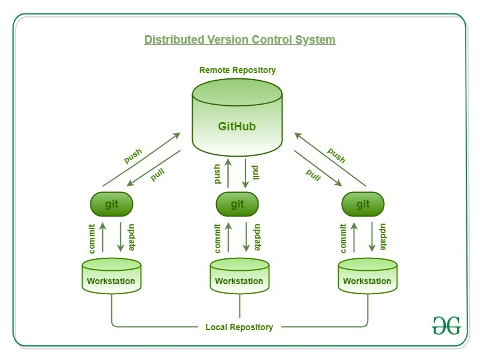

GIT là một hệ thống quản lý phiên bản phân tán (Distributed Version Control System – DVCS) ra đời vào năm 2005 và hiện được dùng rất phổ biến. So với các hệ thống quản lý phiên bản tập trung khi tất cả mã nguồn và lịch sử thay đổi chỉ được lưu một nơi là máy chủ thì trong hệ thống phân tán, các máy khách không chỉ "check out" phiên bản mới nhất của các tập tin mà là sao chép (mirror) toàn bộ kho mã nguồn (repository). Như vậy, nếu như máy chủ ngừng hoạt động, thì bạn hoàn toàn có thể lấy kho chứa từ bất kỳ máy khách nào để sao chép ngược trở lại máy chủ để khôi phục lại toàn bộ hệ thống. Mỗi checkout thực sự là một bản sao đầy đủ của tất cả dữ liệu của kho chứa từ máy chủ.

Git sẽ giúp bạn:
✅ Quản lý các phiên bản khác nhau của mã nguồn
✅ So sánh giữa các phiên bản
✅ Phối hợp làm việc nhóm
✅ Theo dõi, quản lý các thành viên tham gia
✅ Thử nghiệm tính năng, nâng cấp mà không sợ bị ảnh hưởng
Hướng dẫn cài đặt trên Window
Hướng dẫn cài đặt trên linux